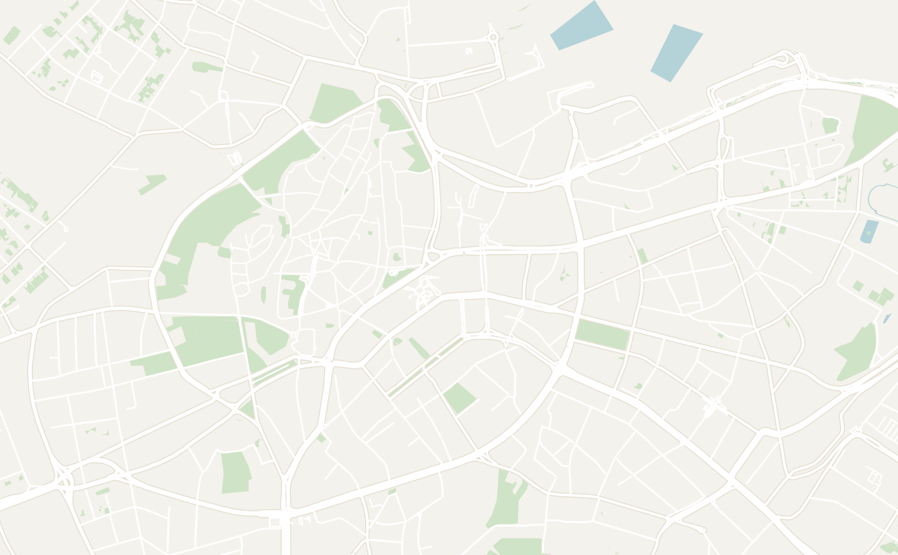
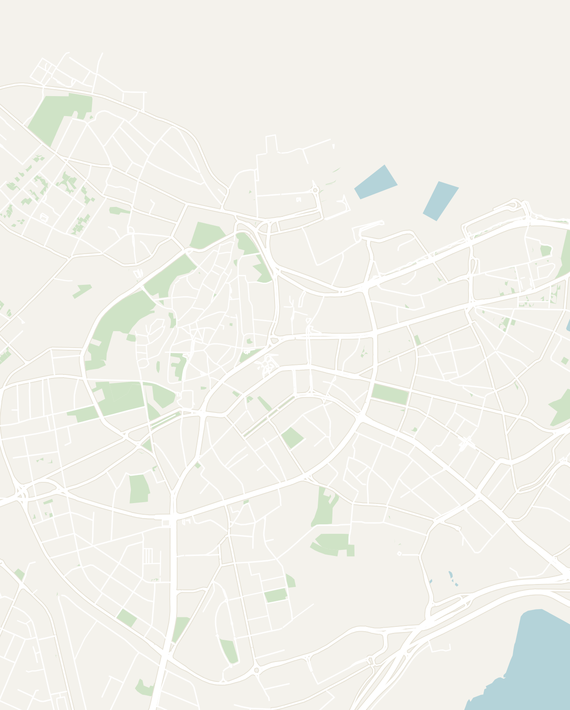

General
Estonia is a tiny country located in northern Europe that most people don't get around to. It was a pleasant surprise and my favorite out of the Baltic. The capital, Tallinn, is an incredibly beautiful city with one of the best-preserved medieval old towns in Europe. Just a few decades ago Estonia was part of the Soviet Union, but it has since modernized rapidly, earning the nickname e-Estonia for it's tech-forward mindset. Almost 100% of the government is digital: you can vote, pay taxes and even submit your marriage certificate online through e-estonia.com (yes this is the government website)!
It compact, affordable and you can get anywhere in the country in under 4 hours. I would recommend spending at least 2 to 4 days in the country with the majority of the time spent in Tallinn. Estonia is best visited as part of a greater Baltics trip (along with Latvia or Lithuania). You can also take a ferry from Helsinki or Stockholm, both a couple of hours across the water.
- Getting around
- Tallinn — the walled old town is small and entirely walkable. Public transport like trams and buses are easy to navigate, and the whole country is famously digital (you can do almost everything by app)
- Ridesharing — Bolt, the European version of Uber, is widely available and affordable in Estonia
- Ferries — There are cheap ferries that run cross to Helsinki in ~2 hours and to Stockholm overnight. It is popular for Estonians to go to Helsinki for just a day if you want to buy a day pass
- Long-distance Buses — I would hardly call any bus ride in Estonia long distance! There are comfortable long-distance buses that connect down through Riga, Latvia and the rest of the Baltics that are perfect to continue your journey
- Money — the Euro is the official currency here. Despite being right across the water from Finland, it is noticeably cheaper than the Nordics
- Food — Estonian food is hearty and northern-European. Some of the dishes that I tried were warming stews, smoked fish, pork, sauerkraut, black rye bread and smoked fish and, plus baked goods like samsa (a flaky meat pastry) reflecting the region's mix of influences
- Language — Estonian is a Uralic language that is closely related to Finnish. Since the breakup of the Soviet Union, Estonia has pivoted hard towards the West. Over 80% to 90% of younger Estonians are fluent in English and it is widely spoken in Tallinn
Tallinn
2-3 days recommendedIt may come as a surprise to many, but Tallinn is one of my favorite cities in Europe. Tallinn has a few different facades, each representing a different aspect of it's history. It is home to a mix of the most well-preserved medieval old town in Europe, a hip creative district full of modern art and modern buildings showing the country's rapid economic growth. Spend a couple days exploring the old medieval town and its cobbled lanes, city walls, castles and even eat in a medieval themed restaurant where the waiters speak to you in Ye Olde English.
Additionally, the city has another side to it: visit the a occupation museum exploring both Soviet and Nazi occupation. Finally, explore the modern day Estonia with modern buildings and a hip creative district. Tallinn is a perfect few day city break and I strongly encourage you to come to a corner of Europe often forgotten about.
- Vanalinn (Old Town) — the medieval old town packed with attractions and one of the best remaining in Europe. Everything below sits within a 15-minute walk, so there's no need to plan a route: just start wandering and mark off places so you don't miss anything. The cobbled lanes, merchant houses and church spires haven't changed much in 500 years, and it's easy to spend a full day here
- Start in the Town Square (Raekoja plats) which is the heart of the old town. It is a wide cobbled square lined with bright, pastel merchant houses and anchored by the Gothic Town Hall. In December, it hosts one of the oldest Christmas markets on the continent
- Town Hall Pharmacy — one of the oldest continuously operating pharmacies in Europe, dating back to the 1400s and still a working pharmacy today. The back room is a tiny free museum of medieval remedies. It only takes a few minutes to visit, but it's a fun spot to take a peek while you're on the square
- III Draakon — a dark medieval tavern tucked into the side of the Town Hall, lit only by candles and staffed by waiters who dress and speak like it is the medieval ages. The menu is classic medieval fare: bowls of hot elk soup, savory pies and spiced wine. It's fun place to stop for dinner and surprisingly not too expensive
- House of the Blackheads — an ornate guildhall once used by the Brotherhood of Blackheads, an association of medieval Baltic merchants and ship-owners. The green, red and gold Renaissance facade, studded with coats of arms, is one of the most photographed in the old town. The interior only opens for concerts and events so stop by if you're passing for a photo. There is also another version in Riga that is worth a visit
- Churches — there are tons of churches to choose from in Tallinn. My favorites were St. Olaf's Church (for the view) and Alexander Nevsky Cathedral (for the golden avantgarde interior)
- St. Olaf's Church — a soaring Lutheran church which was once the tallest building in the world in the 1500s. For a few euros, you can climb the narrow, spiraling stairs to a viewing platform for a great view over Tallinn's red rooftops and the harbor
- Holy Spirit Church — a small white medieval Lutheran church just off the square, best known for the ornate blue-and-gold clock on its facade, the oldest public clock in Tallinn. Step inside for the intricately carved wooden interior and one of the oldest painted altarpieces in the country. It's quick to visit and rarely crowded
- St. Catherine's Church / St. Catherine's Passage — a narrow, partly covered medieval lane running alongside the ruined St. Catherine's Church, its walls set with old carved tombstones. Today it's home to the St. Catherine's Guild, a row of open workshops where you can watch classic potters, glassblowers and hatmakers at work
- St. Nicholas' Church & Museum — a classic Baltic church that has been beautifully restored and serves today as a museum of religious art
- The Tallinn City Walls & towers — Tallinn still has almost two kilometers of its medieval wall standing. You can walk a stretch of the ramparts and climb inside several of the towers which is well worth it
- Viru Gate — the pair of twin-turreted medieval towers that mark the main entrance into the old town from the modern city
- Hellemann Tower & Town Wall Walkway — one of the best places to walk the walls and climb the Hellemann Tower. On one side, you'll see the old town on one side and on the other are the gardens. It was a very cool experience being able to explore and there is a small museum inside of the tower to learn about the Medieval History
- Towers' Square — a grassy park hugging the northern stretch of the city wall, with a photogenic row of red-roofed towers lined up along it. There is a beautiful garden nearby with flower beds in the summer
- Toompea Hill — the upper section old town sits on Toompea Hill. It's a short, but steep walk up (the Lühike Jalg Lane is the prettiest way). This neighborhood is home to the castle, cathedrals and the best viewpoints in the city
- Kohtuotsa, Patkuli and Bishop's Garden are the three lookout platforms up on Toompea Hill, each with a different angle over the red-roofed old town, the spires and the harbor beyond. All three viewpoints are located within a few minutes of each other, so it is easy to string them together as you're walking up the hill
- Kiek in de Kök Fortification Museum — a 15th-century artillery tower which now operates a fortifications museum. You can also access the Bastion Passages which are the tunnels dug beneath Toompea, used as air-raid shelters and a Soviet-era hangout
- Alexander Nevsky Cathedral — the black-domed Russian Orthodox cathedral that sits at the top of Toompea Hill. The inside cathedral is absolutely covered in gold mosaics, icons and hanging lamps. As my first time inside a Russian Orthodox church I was thoroughly impressed. Be warned that photos aren't allowed inside. The lady working there almost slapped my phone out of my hand
- Toompea Castle & Pikk Hermann — the Toompea Castle is pink baroque building which now serves as the seat of the Estonian parliament. Rising beside it is Pikk Hermann, the tall tower that flies the national flag. Unfortunately, you can't go inside the working parliament, but the exterior and the tower are worth the short walk
- St. Mary's Cathedral — also called the Dome Church, this whitewashed cathedral is the oldest church in mainland Estonia, its walls densely hung with the carved and painted coats of arms of the noble families buried here. Worth a look if you're passing, but honestly skippable given how many churches you've probably already visited by this point
- Vabamu Museum of Occupations and Freedom — one of the best museums in Estonia, a country that you probably didn't know much about before visiting. It tells the story of Estonia's 20th century through the Nazi and Soviet occupations and the long road to independence in 1991. It doesn't shy away from the human cost: tens of thousands of Estonians were deported to Siberian gulags, and their testimonies anchor the exhibits. The included audio guide is exceptional, so give yourself a couple of hours and don't rush it
- Hotel Viru & KGB Museum — for more Soviet history with a stranger twist. This was Tallinn's first high-rise hotel, built by the state for foreign visitors, and its secret top floor hid a KGB radio-surveillance station that bugged the rooms below. Locals joked it was built "of micro-concrete": concrete and microphones. You can only visit on a guided tour, which is well worth booking ahead here
- Telliskivi Creative City — after exploring the medieval old town, head to the most vibrant area in the city called Telliskivi Creative City. The neighborhood consists of converted industrial buildings filled with of murals, modern art, shops and good restaurants. Wander the neighborhood to explore all the murals and sculptures scattered about
- Balti Jaam Turg — a large renovated market hall right next to Tallinn's main train station with nearly 300 vendors across three floors. The ground floor has fresh fish, meat and produce alongside about 20 street food stalls including Uzbek dumplings and Georgian food. Upper floors have Estonian design, vintage clothing and antiques. A good mix of locals and tourists and a 10 minute walk from Old Town
- Fotografiska — the Tallinn outpost of Stockholm's famous contemporary-photography museum with a strong programme of exhibitions that changes every few months. Even if photography isn't your thing, the top-floor restaurant and bar is one of the better spots in the area for a drink or dinner, and it stays open late
- Sveta Baar — an atmospheric, red-lit bar in Telliskivi that slowly turns into a techno club after midnight. Local DJs will spin for hours and I had a great time when I was there
- Kadriorg Park — a grand Baroque park and palace commissioned by Peter the Great and named for his wife Catherine, a short tram ride east of the center of Tallinn. It's a peaceful, leafy sprawl of formal gardens, ponds and the pink palace (now an art museum). On the far side sits KUMU, the excellent national art museum and easily worth an hour or two
- Estonian Open Air Museum — a large open-air museum on the wooded coast west of the city, where historic Estonian farmhouses, windmills, a wooden church and a village inn have been relocated. In summer there are costumed demonstrations, horse carts and folk dancing, and the on-site tavern serves old-fashioned Estonian food. It takes a bus or a Bolt to reach, but it's a nice half-day and a complete change of pace from the medieval core
- Kooker Raekoja Plats — a tiny window stand serving fresh, tiny Estonian pancakes (pannkoogid), thin and made to order in both sweet and savory versions, from ham and cheese to jam or Nutella. You'll find it just off the Town Square
- Munga Kelder — a medieval cellar restaurant lit by stained glass and candles, one of the more atmospheric places to try traditional Estonian food. I had a slow-roasted pork that fell apart at the fork, with mild sauerkraut and a dark, faintly sweet cranberry brea. It was one of my better meals in the city
- Pulla Bakery — a cozy little bakery-cafe with a lovely sweet poppyseed roll alongside cinnamon buns, pastries and good coffee
- Lido Baltic Buffet (Ülemiste mall) — a cheap, cheerful self-service canteen in the Ülemiste mall where you slide a tray along and point at what you want: borscht, fried green beans, sausages, crepe-wrapped pork rolls and a long line of other Baltic comfort food. It a cheap and authentic way to sample a variety of Estonia foods
- Whisper Sister — a hidden speakeasy-style cocktail bar with no real sign, so you'll need to find the unmarked door and just walk in. Inside it's dim, intimate and quietly cool, with a short menu of excellent, inventive cocktails
- Base yourself in Vanalinn or Old Town as everything is walkable from here
- The Monk's Bunk Hostel & Bar — a hostel with basic bunks that is located right in old town. I found it very social and the ability to walk anywhere was perfect


Double-tap to open in Google Maps
Other Places to Consider
Tallinn is the primary stop for most travelers, but Estonia has more to offer besides the capital:
- Tartu — Estonia's second city, built around the University of Tartu, one of the oldest universities in Northern Europe. It has a different feel from Tallinn: younger, more relaxed and more authentically Estonian. Located about 2.5 hours from Tallinn by bus and worth a night or two
- Lahemaa National Park — an easy hour's drive east of Tallinn and the best place in Estonia to experience the country's natural landscape. The park covers a dramatic stretch of Baltic coastline indented with peninsulas and bays, backed by ancient boreal forest, raised bogs and lakes
- Saaremaa — Estonia's largest island and a peaceful world away from the mainland. Reached by a 30 minute ferry from Virtsu, the island is known for its windmills, juniper heath landscapes, medieval Kuressaare Castle and a string of spa hotels that attract Estonians for weekend breaks. A good option if you want to slow down and spend a couple of days outside the cities